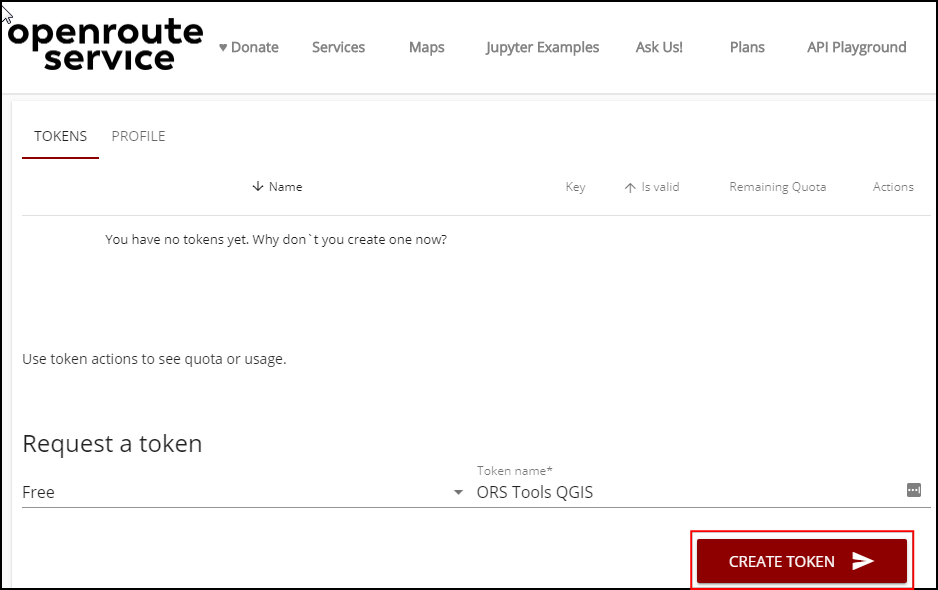

Ujaval Gandhi
Ujaval GandhiAnaliza područja usluge korišćenjem Openrouteservice (QGIS3)¶
Analiza područja usluge je korisna u proceni dostupnosti lokacija. Na osnovu lokacija vatrogasnih stanica, bolnica, stanica javnog prevoza itd., možete koristiti takvu analizu da biste identifikovali koja područja se mogu opsluživati sa ovih lokacija, bilo na osnovu pređene udaljenosti ili vremena potrebnog za putovanje. Do nedavno, takva analiza je bila teška korišćenjem alata i podataka otvorenog koda. Ali sada imamo pristup globalnoj mreži ulica koristeći OpenStreetMap (OSM) i besplatne veb servise kao što je Openrouteservice (ORS) koji mogu da obavljaju složene zadatke rutiranja koristeći podatke OpenStreetMap (OSM). U ovom tutorijalu, koristićemo ORS Tools Plugin za analizu područja usluge u QGIS-u.
Pregled zadataka¶
Koristićemo podatke o metro železničkim stanicama za Koči, Indija, da bismo utvrdili područja koja su udaljena 15 minuta hoda.
Druge veštine koje ćete naučiti¶
Kako učitati podatke o tranzitnom fidu iz Opšte specifikacije tranzitnih fidova (GTFS) u QGIS.
Kako konvertovati sekvencijalne podatke tačaka u linijsku stazu pomoću alatke Tačke u putanju.
Dobijte podatke¶
Kochi Metro Rail Limited (KMRL) pruža otvorene podatke za projekat Kochi Metro Rail u Global Transit Feed Specification (GTFS-static) formatu. Zahtevajte preuzimanje podataka posetom stranice Otvoreni podaci.
Radi lakšeg snalaženja, možete direktno preuzeti kopiju skupova podataka sa donjih linkova:
Izvor podataka [KMRL]
Podešavanje¶
Openrouteservice API pruža algoritme za rutiranje koji rade na besplatnim geografskim podacima iz OpenStreetMap-a. To je besplatna veb usluga kojoj se može pristupiti preko QGIS dodatka. Iako je usluga besplatna, zahteva da se registrujete i dobijete API ključ. API ključ se koristi za sprečavanje zloupotrebe i sprovođenje ograničenja upotrebe.
Posetite stranicu Openrouteservice Sign Up i kreirajte nalog. Kada se vaš nalog aktivira, posetite svoju Dashboard i zatražite token. Izaberite
Freekao Token type i unesiteORS Tools QGISkao Token name. Kliknite na CREATE TOKEN.

Kada ga kreirate, kopirajte dugačak string prikazan pod „Ključ“. Ovo je jedinstveni identifikator povezan sa vašim nalogom koji će se koristiti za autorizaciju korišćenja ove usluge.

Otvorite QGIS. Posetite . Potražite dodatak ORS Tools i instalirajte ga. Kliknite na Zatvori.

U glavnom QGIS prozoru, idite na .

Proširite odeljak openrouteservice i nalepite
key(kopiran u koraku 2) u tekstualno polje API Key. Kliknite na OK.

Procedura¶
Raspakujte preuzetu datoteku
KMRL-Open-Data.zipu fasciklu na vašem računaru. Primetićete da raspakovani direktorijum sadrži mnogo tekstualnih datoteka. Svaka datoteka sadrži podatke za različit aspekt tranzitnog sistema. Format datoteka i njihova upotreba opisani su u GTFS Reference. Od svih datoteka, 2 datoteke sadrže geoprostorne podatke i od interesa su za nas. Datotekashapes.txtsadrži tačke koje opisuju fizičku putanju kojom se vozilo kreće, a datotekastops.txtsadrži lokaciju svake tranzitne stanice. Obe su CSV datoteke koje se mogu uvesti u QGIS. Kliknite na dugme Otvori menadžer izvora podataka.

U dijalogu Data Source Manager, pređite na karticu Delimited Text. Kliknite na dugme … pored File name i pregledajte datoteku
shapes.txt. IzaberiteCSV (comma separated values)kao File Format. Polja X i Y trebalo bi da budu automatski popunjena. Kliknite na Add.

Slično tome, ponovo kliknite na dugme … i izaberite datoteku
stops.txt. Kliknite na Dodaj. Kliknite na Zatvori.

Videćete 2 nova sloja
stopsishapesdodata na Lajeri panel. Hajde da konvertujemo tačkasti slojshapesu linijski sloj koji predstavlja putanju metro linije. Idite na .

Potražite i pronađite alatku . Dvaput kliknite da biste je pokrenuli.

U dijalogu Tačke do putanje, izaberite
oblicikao Sloj unosnih tačaka. Prema GTFS specifikacijama, svaka pojedinačna ruta ima jedinstvenioblik_id, pa ga izaberite iz padajućeg menija kao Izraz grupe putanja. Takođe možemo da odredimo redosled tačaka koje će formirati liniju izboromoblik_pit_sekvencekao Izraz redosleda. Kliknite na Pokreni.

Novi sloj „Putanje“ biće dodat na panel :guilabel:„Slojevi“. Možete isključiti vidljivost sloja „oblici“ da biste videli novododati sloj linija.

Sada kada smo dodali podatke o metro stanicama i linijama, spremni smo da započnemo analizu mreže. U Processing Toolbox, potražite i pronađite alatku . Dvaput kliknite da biste je pokrenuli.

Izaberite
openrouteservicekao Provider. Izračunaćemo poligon udaljenosti od 15 minuta hoda od svake metro stanice. Izaberitestopskao Input Point Layer. Izaberitestop_idkao Input Layer ID. Iz padajućeg menija Travel mode izaberitefoot-walking. Pošto nas zanima vremenski zasnovano područje, izaberitetimekao Dimension. Na kraju unesite15minuta kao ranges. Kliknite na Run.

Белешка
Imajte na umu da Openrouteservice API ima ograničenje od 20 zahteva u minuti za izohrone. Dakle, ako vaš sloj ima više od 20 tačaka, možete videti greške koje ukazuju da je ograničenje brzine prekoračeno. Možete nastaviti da alat radi i on će nastaviti da obrađuje 20 tačaka u minuti.
Kada alat završi sa radom, videćete novi sloj „Izohroni“ učitan u panelu Slojevi. Svaka tačka ima pridruženi poligon koji predstavlja područje koje je dostupno u roku od 15 minuta hoda. Da biste ovo videli u kontekstu podataka koji su korišćeni za njihovo generisanje, možemo dodati osnovnu mapu OpenStreetMap. Pomerite se nadole u panelu Pregledač i pronađite . Prevucite ga na platno.

Novi sloj „OpenStreetMap“ biće dodat na panel :guilabel:„Slojevi“. Prevucite ga nadole da biste promenili redosled slojeva i zadržali ga na dnu steka slojeva. Zumirajte i pomerajte da biste videli da li rezultati odgovaraju putnoj mreži. Videćete da poligoni nisu kružni, jer se vreme putovanja izračunava duž puteva, tako da će regioni koji nemaju puteve imati manju pokrivenu površinu.
Da bismo izračunali područje usluge, potrebno je da završimo još jedan zadatak. Možemo spojiti pojedinačne izohrone poligone da bismo formirali jedan poligon koji predstavlja područja koja su dostupna. Potražite i pronađite .

Izaberite „Izohroni“ kao Ulazni sloj i kliknite na Pokreni.

Kada se obrada završi, novi sloj „Dissolved“ biće dodat na panel Layers. Ovi poligoni predstavljaju celu regiju kojoj je moguće pristupiti iz metro sistema u roku od 15 minuta hoda.

Белешка
Ovo je jednostavan primer kako se analiza područja usluge za projekat javnog prevoza može uraditi u QGIS-u. Sveobuhvatnija analiza područja usluge za metro sistem bi uključivala i druge vidove prevoza. Mogli bismo da uključimo autobuse za priključke, obližnja autobuska stajališta i rute koje opslužuju ta autobuska stajališta kako bismo proširili analizu. Takođe možemo da uključimo putovanje drugim vidovima prevoza kao što su automobil i taksi.
If you want to give feedback or share your experience with this tutorial, please comment below. (requires GitHub account)